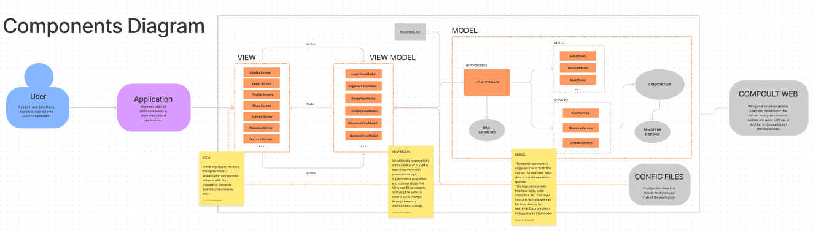

CompCult Mobile - Documentação arquitetural
Este documento tem por finalidade descrever a plataforma CompCult Mobile sob diversos níveis (visões) arquiteturais. Em verdade, a CompCult Mobile descreve uma White Label, um arcabouço para o desenvolvimento das aplicações móveis produzidas pelo laboratório CompCult - UFCG.
Autores
Este documento foi produzido por Lucas Christopher de Souza Silva.
- Matrícula: 115210934
- Contato: lucas.christopher.silva@ccc.ufcg.edu.br
- Projeto documentado: https://github.com/CompCult/compcult-mobile
Descrição Arquitetural
Este documento descreve parte da arquitetura do projeto CompCult Mobile. Essa descrição foi baseada principalmente no modelo C4.
Descrição Geral sobre o CompCult Mobile
A CompCult Mobile é uma white label app que tem como objetivo oferecer um arcabouço para o desenvolvimento das aplicações híbridas produzidas pelo laboratório CompCult - UFCG. Através dessa aplicação, podemos dar forma às metodologias frisadas pelo ReadAct, dando forma ao conceito interno do laboratório chamado GSDK (Gaming Software Development Kit), que, em suma, trata-se de uma implementação de realidade alternativa em aplicações socioeducativas.
O Arcabouço para aplicações socioeducativas desenvolvidas pelo CompCult Atelier
Objetivo Geral
Implementar um arcabouço para padronizar as aplicações socioeducativas desenvolvidas pelo CompCult Atelier a fim de proporcionar uma arquitetura limpa, com fácil manutenção e que siga as metodologias frisadas pelo ReadAct.
Objetivos Específicos
Queremos propor ao CompCult uma forma de desenvolver aplicações de uma maneira mais facilitada. Com esta missão em vista, escolhemos o uso do Flutter (SDK do Google) para desenvolver o sistema, já que com ele, temos a vantagem de utilizar uma única base de código para oferecer a aplicação aos sistemas operacionais Android e iOS, de uma forma que a performance seja semelhante a de aplicações nativas.
Visto que os projetos que chegam ao laboratório são de cunho exclusivamente educacional, a ideia é propor uma interface para acelerar o desenvolvimento de nossos produtos de uma forma que não impacte na qualidade dos mesmos. Além disso, a maturação da ideia deste arcabouço levará a possíveis negociações com empresas de viés educacional que buscam melhorar a interação aluno-professor.
Contexto
O sistema se resume a uma aplicação mobile híbrida que aproxima a interação aluno-professor utilizando-se de realidade alternativa. Com isso, disponibilizamos aos clientes do CompCult uma interface personalizável e distribuída ao qual eles podem trazer a aplicação, “sua própria cara” (com suas cores e temas de preferência). Imagine que você tenha uma forma de bolo em sua casa. Nela, você pode fazer bolos de diferentes sabores, porém, todos esses bolos terão o mesmo formato. Em suma, é basicamente isso: o usuário consome uma aplicação que é uma implementação do CompCult Mobile.
O arcabouço é composto basicamente por:
- sistema de log in/sign up: podemos cadastrar usuários e entrar/sair da aplicação com os mesmos;
- missões/quizzes: a aplicação possui quizzes na forma perguntas/respostas, e missões, que podem proporcionar uma ideia de realidade alternativa, no qual os usuários (geralmente, alunos) da aplicação podem solucionar suas missões dispondo de respostas através de geolocalização, imagens, vídeos e arquivos de áudio;
- sistema de rancking/recompensa: a cada missão/quiz resolvido, os usuários recebem pontuações e recompensas na aplicação (moedas virtuais na aplicação que possibilitam uso na loja);
- loja: uma miniloja com itens no qual os usuários podem comprar/vender itens utilizando-se de suas moedas virtuais, itens como livros e novas missões.

Containers
A arquitetura do CompCult Mobile foi pensada no padrão de projeto MVVM (Model-View-ViewModel), que visa estabelecer uma clara separação em camadas de responsabilidades e tornar a aplicação mais manutenível e testável. A grosso modo, temos uma divisão em três containers:
VIEW: Aqui temos toda a parte de visualização onde o usuário iterage com a aplicação. Nela estão todas as telas com seus respectivos layouts, componentes (botões, inputs, menus e etc), temas, imagens e etc.
BUSINESS LOGIC: Por outro lado, nesta camada temos os intermediadores e os responsáveis por ditarem as regras de negócio da aplicação.
DATABASE: Camada responsável pelo armazenamento dos dados da aplicação, localmente e remotamente.

Componentes
Expandindo os containers do white label, podemos enxergar os principais componentes da aplicação com seus relacionamentos e responsabilidades descritas.
VIEWS: Aqui reunimos todas as telas da aplicação. Podemos enxergar por exemplo, a “LoginScreen” que é a tela no qual o usuário poderá inserir seus dados e entrar na aplicação; também, a “MissionsScreen” e a “QuizzesScreen” que reúnem, respectivamente, a listagem de missões e quizzes disponíveis para os usuários, além das opções de inserir códigos para missões/quizzes secretos e tudo mais.
Expandindo o container “Business Logic”, podemos encontrar:
VIEWMODELS: Buscam prover para as views a lógica de apresentação, implementando propriedades e comandos para que as views possa preencher seus controles, notificando as mesmas, em caso de mudança de estado, através de eventos ou notificação de mudança. Os viewmodels funcionam como controladores das ações que os usuários fazem nas views. Podemos citar por exemplo, o “StoresViewModel”, que lida com todo controle de ações nos usuários com a loja, como por exemplo, a pesquisa, a venda e a compra de itens na loja da aplicação, e o “GamesViewModel” que lida com as iterações do usuário referente aos minijogos na aplicação, controlando a pontuação e regras dos minijogos.
MODELS: Esse componente engloba a manipulação dos dados. Podemos ver os models que são as abstrações para as entidades da aplicação (usuário, missão, quiz, itens da loja e etc), os repositories que controlam as ações de armazenamento no dispositivo do usuário e os services que listam as chamadas para a CompCult API.
Em suma, as views enviam suas ações para os viewmodels. Estes, por sua vez, podemos ver que ocupam a posição central, enviando e recebendo os dados dos models e fornecendo os dados para as views, sem conhecer o que há nelas. Também observam as mudanças de dados que ocorreram nas views e respondem de acordo com o modelo para a vista.

Código
Nesta etapa não faremos diagramas que apresentam detalhes da implementação. Faremos isso mais adiante.
Visão de Informação
As informações mais importantes para o funcionamento do CompCult Mobile se dá pela personalização do cliente nos arquivos de configuração:
- lib/config.dart: configurações gerais do aplicativo (cores, nome, url da api, etc);
- pubspec.yaml: configuração das imagens e fontes utilizadas na aplicação;
- android/app/src/main/AndroidManifest.xml: configuração do package name utilizado nas lojas de aplicações;
- android/app/external: configura as chaves e certificados para aplicação.
Feita essas configurações, o cliente poderá executar a aplicação e o white label gerará uma nova aplicação com as configurações aplicadas.

Contribuições Concretas
Apesar do Flutter deixar livre para a comunidade como estruturar o projeto, o CompCult Mobile foi iniciado de uma forma confusa, com um MVC mal implementado e uma estruturação de pastas nada agradável. Com isso, em meados de junho de 2020 foi proposta uma refatoração total na arquitetura e nos componentes da aplicação, para adotarmos o que mais tem sido utilizado na comunidade:
- Slidy para estruturação e divisão de pastas do projeto;
- Flutter Modular para a navegação e rotas da aplicação;
- Padrão arquitetural MVVM, que é o mais utilizado em aplicações móveis e recomendado pelo Google;
- MobX para o controle e gerência de estados da aplicação.
Segue abaixo os Pull Request com contribuições para o projeto:
- Jogo da memória implementado no GSDK (ReadAct);
- Funcionalidade de missões aceitarem arquivos de áudio como respostas;
- Refatoração no layout e na lógica de negócio das telas de login e cadastro de usuários.
Segue o link dos commits na branch com a nova reestruturação proposta até o final de 2021: